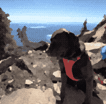

> whoami
Omar Rashwan
Software engineer — low-level systems & graphics
> head -n 4 interests.txt | nl
- fixed gear cycling
- coffee
- outdoor exploration
- technology (obviously)
> status
Rebuilding from scratch

> whoami
Software engineer — low-level systems & graphics
> head -n 4 interests.txt | nl
> status
Rebuilding from scratch
